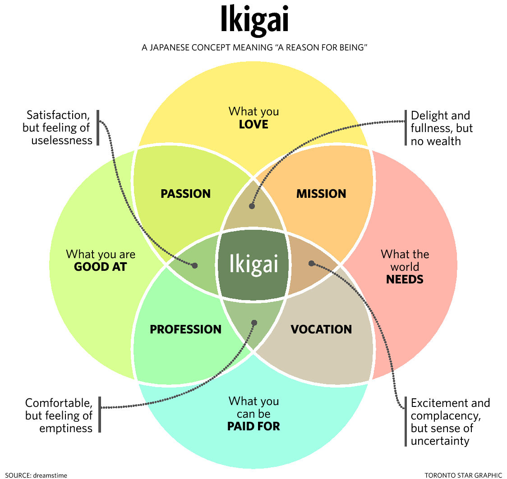

The definition of IKIGAI
The term ikigai compounds two Japanese words: iki meaning "life; alive" and gai meaning "(an) effect"; It can be seen as:
"reason for being"
"the reason for which you wake up in the morning"
"the happiness of being busy"
If you’re feeling lost or unsure about what your ikigai is, there are a number of ways to refocus your mind and purpose. “If you find yourself blocked because change is difficult, try adding some new thing to your life: a new
hobby, new circle of friends, or a new job on the side
“Ikigai is what day after day each of us most essentially lives for.”
The True Meaning of Ikigai: The Japanese Life Purpose
The Ikigai concept is divided in 4 branches.
MISSION: You love somethink and the world need it.
PASSION: You are good at something and love it but are not payed for it.
PROFFESSION:You are good at it and get payed for it.
VOCATION The world need it and you are paid for it but may not be good at it.
